Skin Cancer HAM10000 — 7-Class Lesion Classification
10,015 dermatoscopic images across 7 diagnostic categories — a staged build from a from-scratch CNN through class-imbalance handling, transfer learning, Grad-CAM interpretability, and unsupervised embedding clustering. Every stage is evaluated per-class, not just on overall accuracy, since overall accuracy turns out to hide almost everything interesting in this dataset.
The data
Images are DermaMNIST, a 128×128 standardized derivative of the HAM10000/ISIC 2018 source images with an official stratified split (7,007 train / 1,003 validation / 2,005 test). Demographic metadata comes from the Harvard Dataverse HAM10000 release.
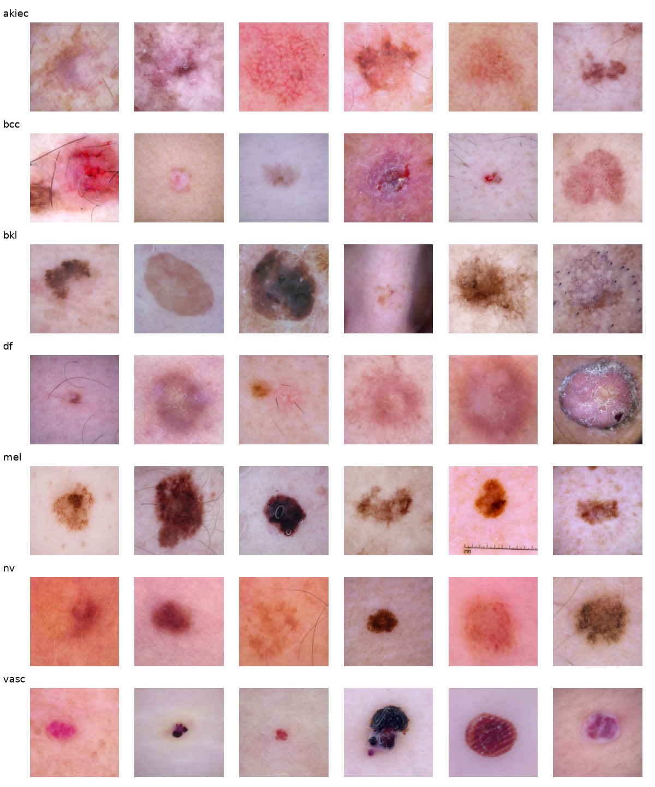
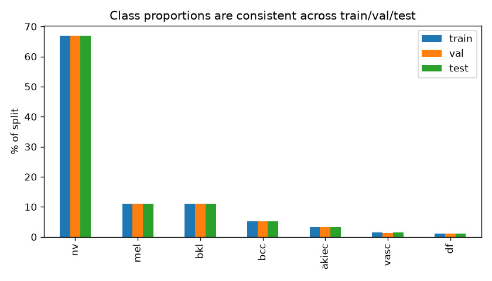
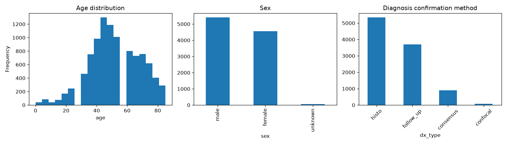
Stage progression
Four stages, same held-out test set throughout. Overall accuracy barely moves after the first stage — macro-F1 (which treats all 7 classes equally, instead of being dominated by the 67%-share majority class) is where the real story is.
| Stage | Test accuracy | Macro-F1 |
|---|---|---|
Majority-class baseline (always guess nv) | 0.669 | — |
| Baseline CNN (from scratch, bugs fixed) | 0.704 | 0.259 |
| + tempered class weights | 0.700 | 0.371 |
| + class weights + augmentation | 0.697 | 0.245 |
| MobileNetV2 transfer learning | 0.699 | 0.531 |
Baseline: what "fixing the bugs" alone gets you
A 4-block CNN trained from scratch, with an explicit image/label alignment check before training and one model object trained straight through to evaluation — no separate device-specific clone, no session-clearing between training and evaluation.
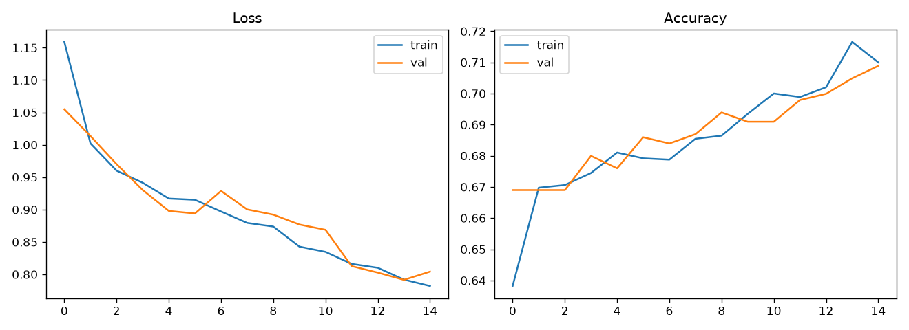
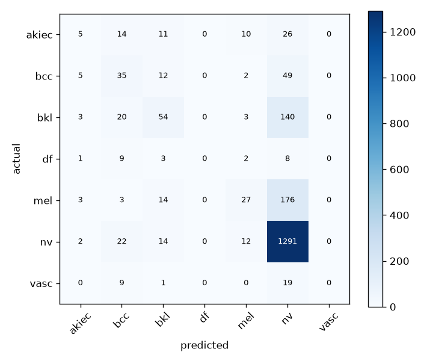
nv column. df and vasc get 0% recall.Class imbalance: a training collapse, then a fix
sklearn.utils.class_weight.compute_class_weight('balanced', ...))
range from 0.21× (nv) to 11.9× (df)
— a ~57× spread. Training with these directly collapsed
completely: loss got stuck at ln(7) = 1.946, exactly what a
uniform random guess produces, and validation accuracy fell near 0%
regardless of learning rate. A handful of heavily-weighted rare-class
samples per batch were dominating the gradient.
The fix: tempering the weights with a square root (same ranking, rare classes still matter more, ~7.5× spread instead of 57×) resolved it outright. Comparing tempered class weights, with and without augmentation, against the baseline:
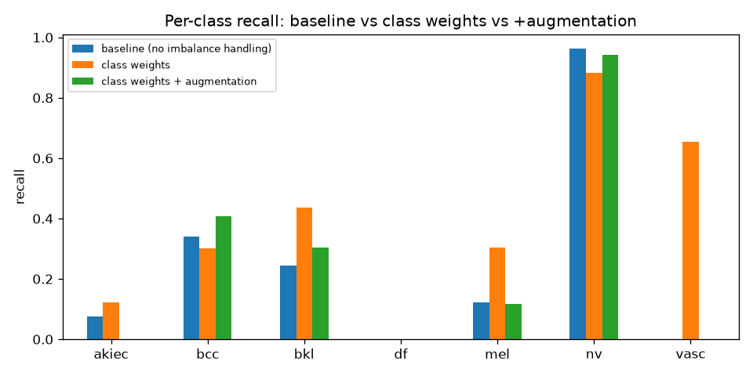
vasc: 0% → 65.5%). Adding augmentation on top actually did worse in this run than weighting alone.Transfer learning: the real turning point
Fine-tuning a pretrained MobileNetV2 (frozen head first, then a partial unfreeze at a low learning rate) instead of training a CNN from scratch. Same ballpark overall accuracy as the baseline, but a very different, far more useful model.
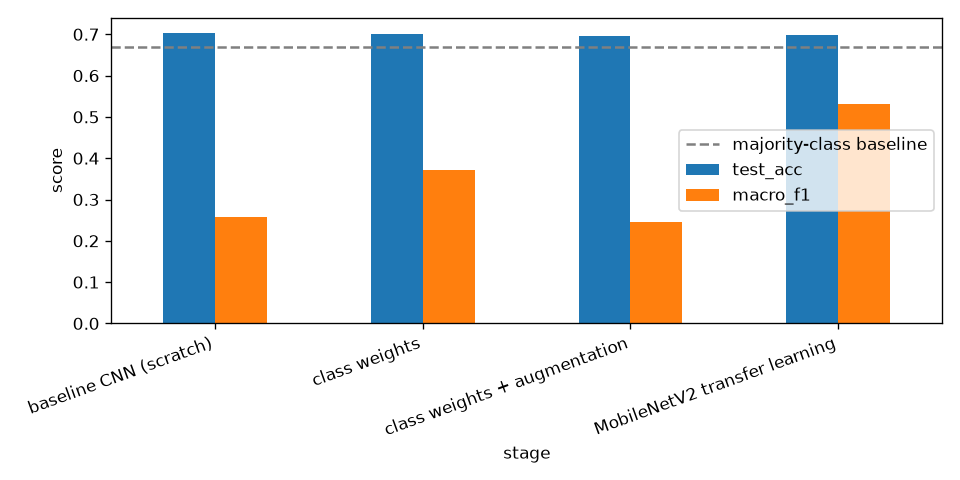
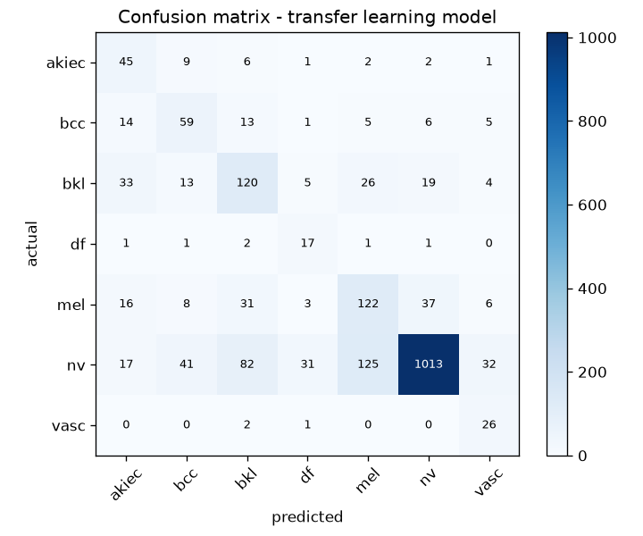
| Class | Recall | ROC AUC |
|---|---|---|
| akiec | 0.682 | 0.944 |
| bcc | 0.573 | 0.955 |
| bkl | 0.545 | 0.863 |
| df | 0.739 | 0.958 |
| mel | 0.547 | 0.846 |
| nv | 0.755 | 0.913 |
| vasc | 0.897 | 0.993 |
Macro-average AUC: 0.925. Every class - including
df, stuck at 0% recall in both earlier attempts - now
reaches above 50% recall.
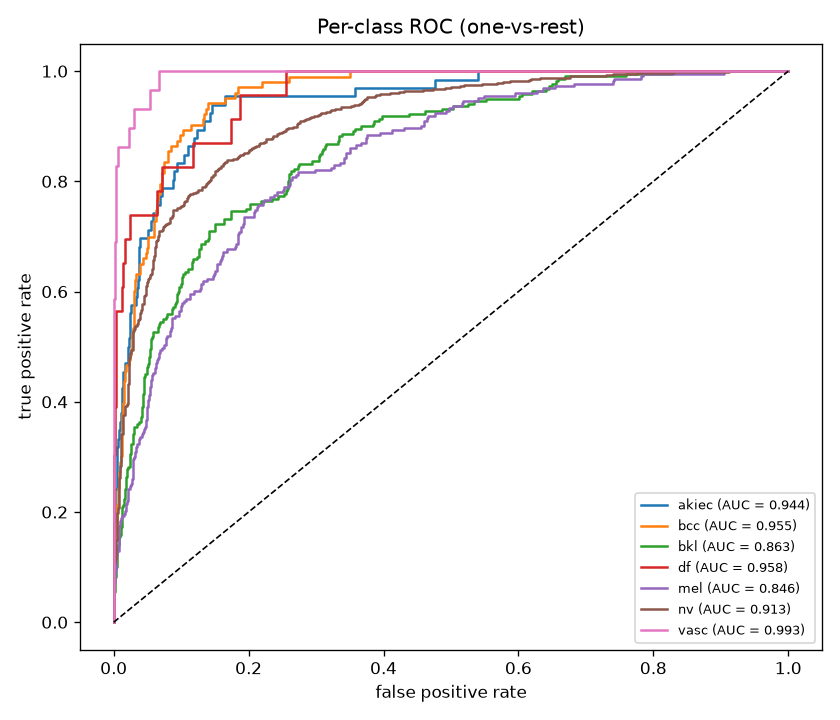
Grad-CAM: what is the model actually looking at?
Grad-CAM highlights which pixels pushed the network toward its predicted class, by tracing the gradient of that class's score back into the last convolutional feature map.
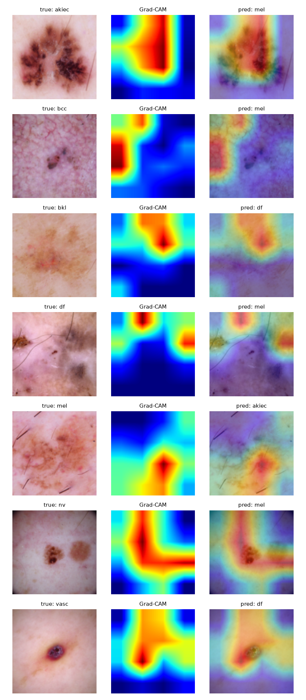
Unsupervised: do the model's own embeddings know anything?
Taking the 1280-dimensional feature vector the network computes right before its classification head, and clustering it — KMeans and a Gaussian mixture model — without ever showing either algorithm a label. The labels are used only afterward, to check the clusters against them.
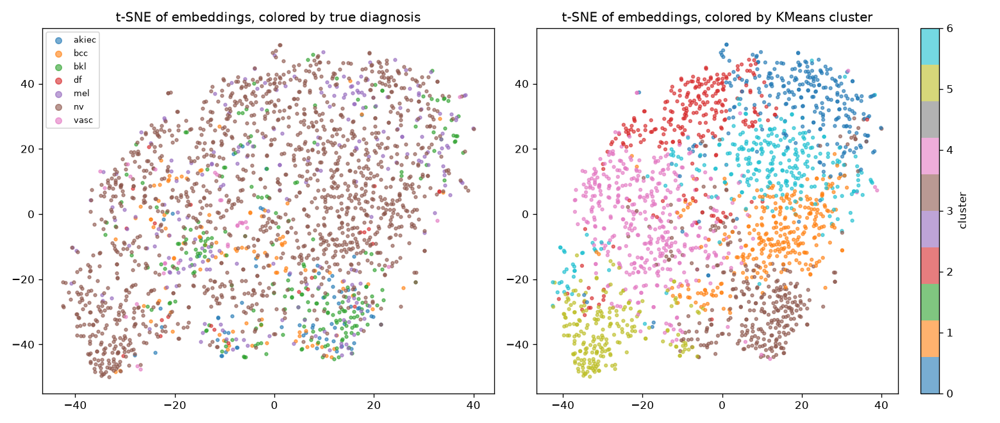
nv's sheer volume dominates the embedding space visually - the clusters don't correspond cleanly to the 7 diagnostic categories (adjusted Rand ~0.03, near chance level).Key findings
- Fixing correctness bugs alone barely moved the needle.
A verified image/label alignment and a clean train-to-evaluate path
reached 70.4% accuracy against a 66.9% majority-class baseline - real,
but marginal, and per-class recall showed the model had mostly
learned to guess
nv. - Naive class weighting can break training before it helps. A ~57× weight spread caused a full collapse to random-guessing loss; tempering with a square root fixed it and raised macro-F1 from 0.26 to 0.37.
- Transfer learning was the real turning point - same
~70% overall accuracy as the from-scratch baseline, but macro-F1 of
0.53 and every class above 50% recall, including
df(0% in every earlier attempt). - Per-class AUC averaged 0.92, and Grad-CAM shows the model generally attending to the lesion itself, not background or artifacts - a useful sanity check distinct from any single accuracy number.
- The model's embeddings only weakly reflect real diagnoses
without label supervision - adjusted Rand index ~0.03,
dominated by
nv's sheer volume rather than clean diagnostic separation.